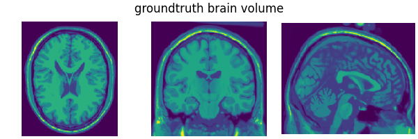
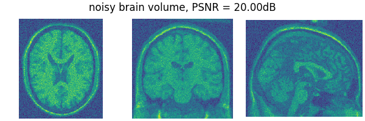

Note
New to DeepInverse? Get started with the basics with the 5 minute quickstart tutorial..
3D denoising#
This example shows how to use variational 3D denoisers for denoising a 3D image. We first apply a standard soft-thresholding wavelet denoiser to a 3D brain MRI volume, as well as a 3D TV denoiser. We then extend the wavelet denoiser objective to a redundant dictionary of wavelet bases, which does not admit a closed-form solution. We solve the denoising problem using the Dykstra-like algorithm.
import deepinv as dinv
from pathlib import Path
import torch
import torch.nn as nn
Setup paths for data loading and results.#
Load base volume image and denoising operators.#
In this example, we use a T1-weighted brain MRI volume from the BrainWeb dataset (subject id 4) and we add Gaussian random noise to it. Following the torch convention, the volume is of shape (C, D, H, W), where C is the number of channels, D is the depth, H is the height, and W is the width. We use a single channel volume in this example.
# Set the global random seed from pytorch to ensure reproducibility of the example.
torch.manual_seed(0)
device = dinv.utils.get_device()
volume_data = (
dinv.utils.load_np_url(
"https://huggingface.co/datasets/deepinv/images/resolve/main/brainweb_t1_ICBM_1mm_subject_0.npy?download=true"
)
.flip(0)
.unsqueeze(0)
.unsqueeze(0)
)
x = volume_data / volume_data.max()
noise_level_img = 0.1 # Gaussian Noise standard deviation for the degradation
physics = dinv.physics.Denoising(
noise_model=dinv.physics.GaussianNoise(sigma=noise_level_img)
)
# Apply the degradation to the image
y = physics(x)
# Compute the PSNR
psnr = dinv.metric.PSNR()(y, x).item()
# Plot the input and the output of the degradation
list_images = [x[0, :, 90, :, :], x[0, :, :, 108, :], x[0, :, :, :, 90]]
dinv.utils.plot(
list_images,
figsize=(6, 2),
suptitle="groundtruth brain volume",
cmap="viridis",
tight=False,
fontsize=12,
)
list_images = [y[0, :, 90, :, :], y[0, :, :, 108, :], y[0, :, :, :, 90]]
dinv.utils.plot(
list_images,
figsize=(6, 2),
suptitle=f"noisy brain volume, PSNR = {psnr:.2f}dB",
cmap="viridis",
tight=False,
fontsize=12,
)
- 
- 
Selected GPU 0 with 6715.25 MiB free memory
/local/jtachell/deepinv/deepinv/deepinv/utils/plotting.py:408: UserWarning: This figure was using a layout engine that is incompatible with subplots_adjust and/or tight_layout; not calling subplots_adjust.
fig.subplots_adjust(top=0.75)
Create the denoising operator and solve the problem.#
We use the WaveletPrior class from the models module to solve the problem. This class implements the proximal operator of the wavelet prior and can be used as a denoiser. More precisely it solves the following problem
where \(\Psi\) is the wavelet transform and \(\lambda\) is the thresholding parameter. The solution to this problem is given by the proximal operator of the wavelet prior.
Note
The computational complexity of the wavelet transform in 3D grows cubically with the size of the support. For this reason, we use a wavelets with small support (e.g. db1 to db4) in this example, which limits the performance of the denoiser.
# Create the wavelet denoiser
wv = "db4"
denoiser = dinv.models.wavdict.WaveletDenoiser(
wv=wv,
wvdim=3,
level=3,
)
# Apply the denoiser to the volume
ths = noise_level_img * 2 # thresholding parameter
with torch.no_grad():
x_hat = denoiser(y, ths) # denoised volume
psnr = dinv.metric.PSNR()(x_hat, x).item() # compute PSNR
# Plot
list_images = [x_hat[0, :, 90, :, :], x_hat[0, :, :, 108, :], x_hat[0, :, :, :, 90]]
dinv.utils.plot(
list_images,
figsize=(6, 2),
suptitle=f"Denoised brain volume, wavelet prior. PSNR = {psnr:.2f}dB",
cmap="viridis",
tight=False,
fontsize=12,
)
/local/jtachell/deepinv/deepinv/deepinv/utils/plotting.py:408: UserWarning: This figure was using a layout engine that is incompatible with subplots_adjust and/or tight_layout; not calling subplots_adjust.
fig.subplots_adjust(top=0.75)
Other variational priors do also support 3D implementation. For instance, this is the case with TV or TGV priors. Below, we illustrate the use of a TV denoiser, that solves the problem
where \(\|\cdot\|_\text{TV}\) is the total variation norm and \(\lambda\) is a regularization parameter.
denoiser_tv = dinv.models.TVDenoiser(n_it_max=10)
# Apply the denoiser to the volume
ths_tv = noise_level_img * 5.0 # thresholding parameter
with torch.no_grad():
x_hat_tv = denoiser_tv(y, ths_tv) # denoised volume
psnr_tv = dinv.metric.PSNR()(x_hat_tv, x).item()
# Plot
list_images = [
x_hat_tv[0, :, 90, :, :],
x_hat_tv[0, :, :, 108, :],
x_hat_tv[0, :, :, :, 90],
]
dinv.utils.plot(
list_images,
figsize=(6, 2),
suptitle=f"Denoised brain volume, TV prior. PSNR = {psnr_tv:.2f}dB",
cmap="viridis",
tight=False,
fontsize=12,
)
/local/jtachell/deepinv/deepinv/deepinv/utils/plotting.py:408: UserWarning: This figure was using a layout engine that is incompatible with subplots_adjust and/or tight_layout; not calling subplots_adjust.
fig.subplots_adjust(top=0.75)
One can extend the above denoisers to more general denoisers. For instance, we can extend the wavelet denoiser to a redundant dictionary of wavelet bases. This is the purpose of the next section.
Extension to multiple wavelet bases.#
Instead of solving the problem in a single wavelet basis, one can seek for sparsity in a redundant dictionary of wavelet bases. Formally,
where \(\Psi_{\ell}\) is the wavelet transform in the \(\ell\)-th basis and \(\lambda_{\ell}\) is the regularization parameter for the \(\ell\)-th basis. As previously, the solution to this problem is given by the proximal operator of \(\sum_{\ell=1}^{L}\lambda_i \|\Psi_{\ell} x\|_1\). In this case however, the proximal operator is not available in closed form but can be computed numerically.
A convenient algorithm in this situation is the Dykstra-like algorithm proposed by Combettes[1], writing
where \(\omega_{\ell} = 1/L\) for all \(\ell\) and \(g_{\ell} = \lambda_{\ell} \|\Psi_{\ell} \cdot\|_1\). In turn, the sequence \((x_n)_{n\in \mathbb{N}}\) converges to the solution of the original problem. We can implement it as follows. First, let’s define the several proximity operators we’ll need.
list_wv = ["haar", "db2", "db3", "db4"]
non_linearity = "soft"
list_prox = nn.ModuleList(
[
dinv.models.wavdict.WaveletDenoiser(
level=3, wv=wv, non_linearity=non_linearity, wvdim=3
)
for wv in list_wv
]
)
# Initialize the first element
z_p = y.repeat(len(list_prox), *([1] * (len(y.shape))))
p_p = torch.zeros_like(z_p)
x_cur = p_p.clone()
# Average proximal step
x_prev = x.clone()
for p in range(len(list_prox)):
p_p[p, ...] = list_prox[p](z_p[p, ...], ths)
x_cur = torch.mean(p_p.clone(), axis=0)
# Reflective step
for p in range(len(list_prox)):
z_p[p, ...] = x_cur + z_p[p, ...].clone() - p_p[p, ...]
# Plot after one step
list_images = [x_cur[0, :, 90, :, :], x_cur[0, :, :, 108, :], x_cur[0, :, :, :, 90]]
dinv.utils.plot(
list_images,
figsize=(6, 2),
suptitle="Denoised brain volume after one step",
cmap="viridis",
tight=False,
fontsize=12,
)
/local/jtachell/deepinv/deepinv/deepinv/utils/plotting.py:408: UserWarning: This figure was using a layout engine that is incompatible with subplots_adjust and/or tight_layout; not calling subplots_adjust.
fig.subplots_adjust(top=0.75)
Iterating the Dykstra-like algorithm.#
We are now ready to iterate this algorithm.
# Algorithm parameters
max_iter = 5 # Increase this number for better results
ths = noise_level_img * 2.0
# Initialize the first element
z_p = y.repeat(len(list_prox), *([1] * (len(y.shape))))
p_p = torch.zeros_like(z_p)
x_cur = p_p.clone()
for it in range(max_iter):
# Average proximal step
x_prev = x_cur.clone()
for p in range(len(list_prox)):
p_p[p, ...] = list_prox[p](z_p[p, ...], ths)
x_cur = torch.mean(p_p.clone(), axis=0)
# Reflective step
for p in range(len(list_prox)):
z_p[p, ...] = x_cur + z_p[p, ...].clone() - p_p[p, ...]
# Relative criterion for convergence
rel_crit = torch.linalg.norm((x_cur - x_prev).flatten()) / torch.linalg.norm(
x_cur.flatten() + 1e-6
)
# Compute the PSNR
psnr = dinv.metric.PSNR()(x_cur, x).item()
# Plot the output
list_images = [x_cur[0, :, 90, :, :], x_cur[0, :, :, 108, :], x_cur[0, :, :, :, 90]]
dinv.utils.plot(
list_images,
figsize=(6, 2),
suptitle=f"Denoised brain volume after 10 steps. PSNR = {psnr:.2f}dB",
cmap="viridis",
tight=False,
fontsize=12,
)
/local/jtachell/deepinv/deepinv/deepinv/utils/plotting.py:408: UserWarning: This figure was using a layout engine that is incompatible with subplots_adjust and/or tight_layout; not calling subplots_adjust.
fig.subplots_adjust(top=0.75)
Using the Dykstra-like algorithm for wavelet denoising.#
You can readily use this algorithm via the deepinv.models.WaveletDictDenoiser class.
- References:
Total running time of the script: (0 minutes 8.902 seconds)